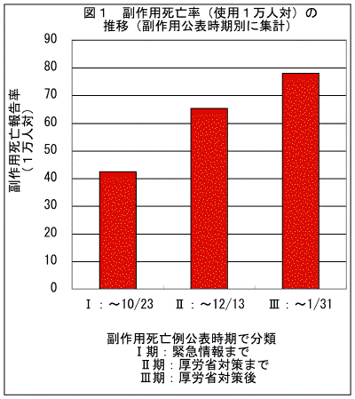
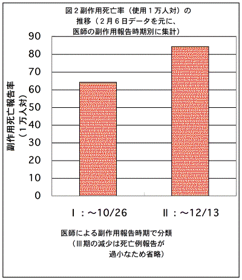

| イレッサ 使用者数 |
副作用死亡 | 肺傷害副作用死亡 | |||
|---|---|---|---|---|---|
| 報告数 | 報告率 | 報告数 | 報告率 | ||
| （人※） | （1万人対） | （人） | （1万人対） | ||
| a)公表時期別集計 | |||||
| ０期：販売開始〜2002/10/13まで | 7000 | 14 | 20.2 | 13 | 18.6 |
| Ｉ期：販売開始〜2002/10/23まで | 10000 | 42 | 42.4 | 39 | 39.0 |
| 販売開始〜2002/11/25まで | 17000 | 88 | 51.8 | 81 | 47.6 |
| II 期：販売開始〜2002/12/13まで | 19000 | 124 | 65.3 | 114 | 60.0 |
| III 期：販売開始〜2003/1/31まで | 23500 | 183 | 77.9 | 173 | 73.6 |
| b)医師の報告時期別集計 | |||||
| ０期：販売開始〜2002/10/12まで | 7000 | 30 | 43.5 | 28 | 40.0 |
| Ｉ期：販売開始〜2002/10/26まで | 10000 | 64 | 64.2 | 59 | 59.0 |
| 販売開始〜2002/11/25まで | 17000 | 136 | 80.0 | 125 | 73.5 |
| II 期：販売開始〜2002/12/13まで | 19000 | 160 | 84.2 | 150 | 78.9 |
| III 期：販売開始〜2003/1/31まで | 23500 | 183 | 77.9 | 173 | 73.6 |
| ※10月〜11月25日の副作用死亡数＝肺傷害副作用死亡数×124/114 で推定 | |||||
| A）2002.12.5 | B）2003.2.6 | C）2カ月後 | |
|---|---|---|---|
| 厚労省説明 | 公表時説明 | ||
| （％） | （％） | ||
| 情報発出前（おそらく10/15頃まで） | 41.3 | 48 | ? |
| 情報発出後（10/15頃〜11/25） | 14.7 | ? | ? |
| 情報発出後（10/15頃〜12/25） | ? | 31 | ? |
| 12月対策後（12/26以降） | ? | 20 | ? |
| 註a：副作用例数に対する副作用死亡数の比率（％） | |||
|  |  |
|---|